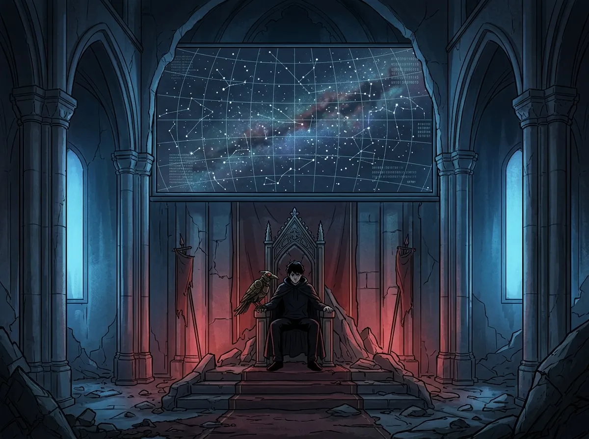
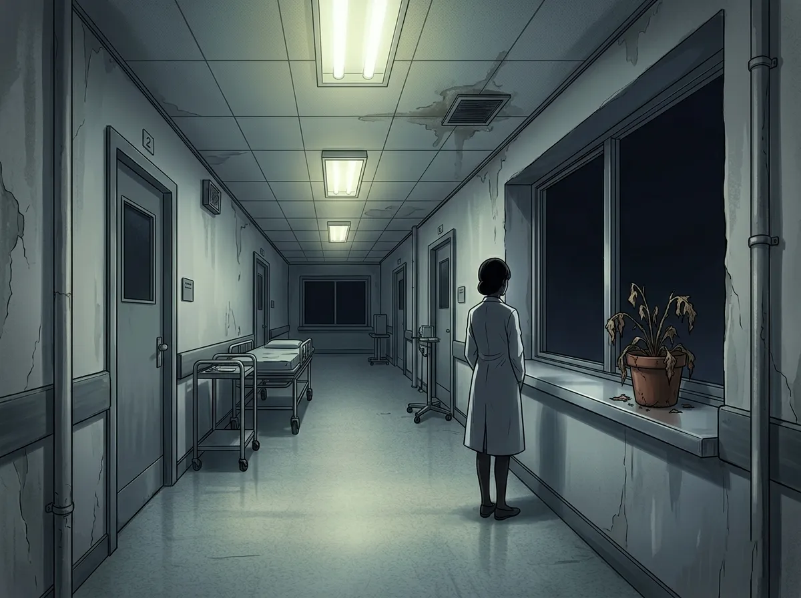
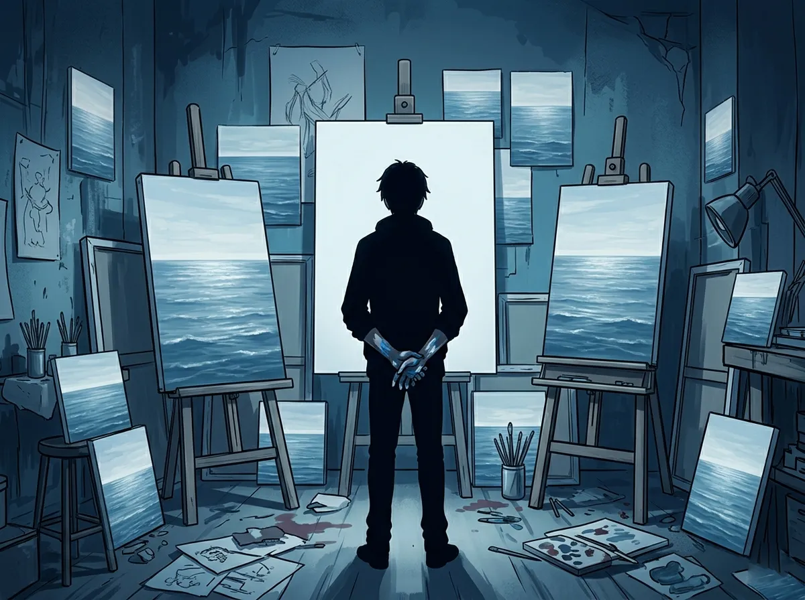
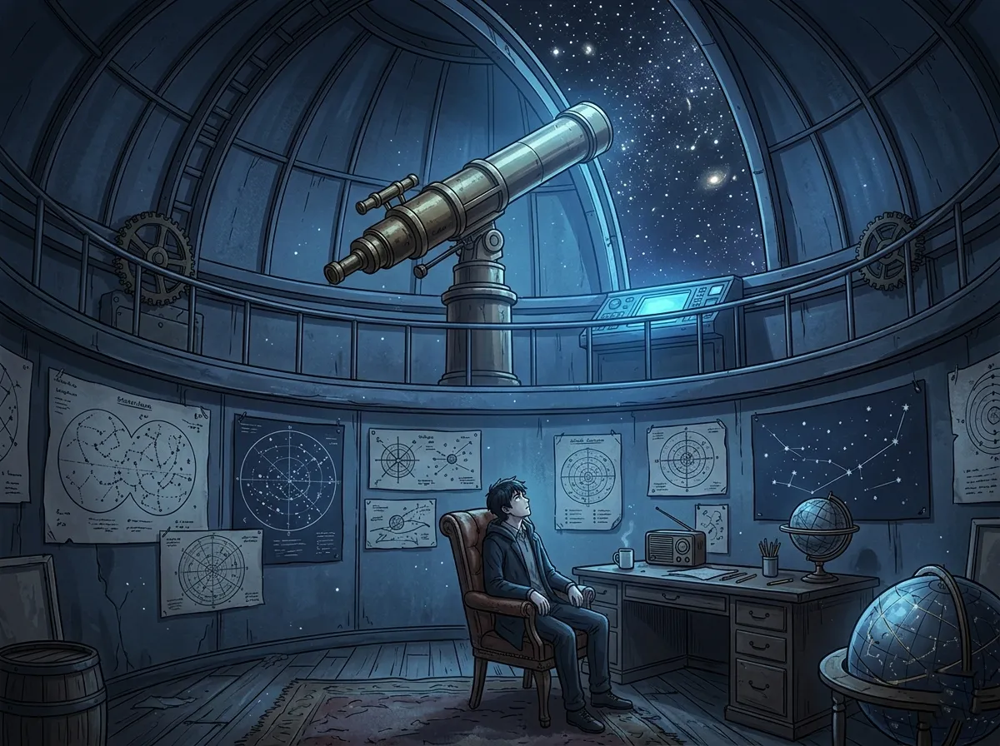
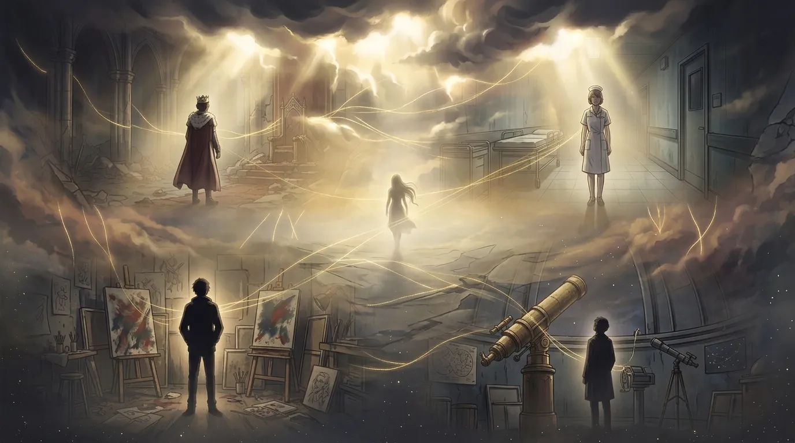

A parallel universe story — four roads not taken
There is a version of every story where the protagonist never arrives.
Where the door stays closed. Where the phone never rings. Where the train leaves, and no one is waiting on the other side.
These are those stories.

The throne room was empty. It was always empty.
Sylus sat in the dark, watching the false stars on the massive screen behind him. He had installed them years ago — a sky he could control, a sky that never changed. It was beautiful, in a hollow way. Like everything else in the N109 Zone.
Mephisto perched on the armrest. The crow was his only company. They had been together for so long that Sylus had stopped remembering what silence felt like before the bird. Now silence was just... silence. Background noise. Like the hum of the city below, or the distant sound of rain on concrete.
"Report," said Sylus.
Mephisto didn't move. There was nothing to report. There never was.
Once, there had been rumors. A hunter. A woman with strange powers. Someone who could walk into the heart of N109 and walk out again. Someone who wasn't afraid.
Sylus had dismissed it. The N109 Zone was full of rumors. Most of them were lies. The ones that weren't were usually about him.
But sometimes, late at night, when the false stars flickered and the city was quiet, he wondered.
What if.
What if someone had come. What if someone had stayed. What if someone had looked at him not as a king or a monster or a problem to be solved — but as a person. A tired person in a big, empty room, surrounded by things he didn't want.
He had built this kingdom. He had conquered every enemy. He had silenced every threat.
And now he sat alone, the most powerful man in the underworld, with nothing to do but watch fake stars and wait for a morning that never came.
Mephisto cawed softly. Sylus didn't respond.
Somewhere in the city, a woman he would never meet was going about her life. She had no idea he existed. She had no idea that in another version of this story, she would walk into his throne room and refuse to flinch.
But that was another story. This was this one.
He stayed on the throne.
The night stayed dark.
The false stars kept spinning.
He had won everything. He had lost everything he never had.

The surgery was successful. They always were.
Zayne removed his gloves. Washed his hands. Walked out of the operating room without looking back. The patient would recover. The family would thank him. He would nod. He would say something professional. Then he would go to his office and sit in the dark until the next surgery.
This was his life. It was a good life. He saved people. He was respected. He was needed.
He was exhausted.
The jasmine on his windowsill had died three months ago. He hadn't noticed until the petals turned brown and crumbled at his touch. He hadn't watered it. He hadn't thought about it. It was just there one day, and then it wasn't.
Like a lot of things.
He sat in his office. The hospital was quiet at this hour. The fluorescent lights hummed. He had grown used to the sound. It filled the silence the way his work filled his days — completely, but not satisfyingly.
Someone knocked. A nurse. "Dr. Zayne, the family wants to thank you."
"Tell them it's not necessary."
"They insist."
He stood up. Walked to the door. Put on his professional face. The face that said I am fine. I am always fine. I am the doctor. You don't need to worry about me.
No one ever did worry about him. Why would they? He was the one who fixed things. He was the one who held everything together. He was the one who never cracked.
But sometimes, late at night, when the hospital was empty and the lights were off, he felt the cracks. Tiny. Invisible. But there.
He thought about the jasmine. He thought about the woman who might have given it to him — if they had met. If she had existed. If she had walked into his office one day and refused to leave. If she had noticed that he wasn't fine. If she had stayed anyway.
But she hadn't. She didn't. She was somewhere else, living a different life, in a different story.
And Zayne was here. In his office. In the dark. Alone.
He picked up the dead jasmine pot. Carried it to the trash. Dropped it in.
It made a small sound. No one heard it.
He healed everyone. No one healed him.

The canvas was blank. It had been blank for three hours.
Rafayel stood in front of it, brush in hand, paint drying on the palette. He had been here before. Many times. The blank canvas was not his enemy. It was his oldest friend. It had never disappointed him. It had never left.
Unlike everything else.
He thought about the sea. He always thought about the sea. The real sea, not the one tourists took pictures of — the one beneath. The one that held the ruins of his kingdom. The one that had swallowed everything he had ever loved.
He painted the sea again. The same waves. The same light. The same horizon. He had painted it a thousand times. A thousand variations of the same memory.
No one came to his exhibitions anymore. The critics said his work was "repetitive." "Lacking evolution." "A artist trapped in his own past."
They were right. He didn't care.
He wasn't painting for them. He was painting for himself. For the memory of a kingdom that no longer existed. For the people who had drowned. For the throne he would never sit on again.
For the woman who never came to his studio.
He didn't know her. He had never seen her face. But sometimes, in the space between sleep and waking, he imagined her. A silhouette in the doorway. A voice asking, "What are you painting?" A hand on his shoulder. A presence that made the studio feel less empty.
It was a fantasy. He knew that. He was too old for fantasies. He had lived too long, lost too much, seen too many things crumble to dust.
But he kept painting the sea. And he kept imagining the silhouette.
It was the only thing that made the studio feel like home.
He finished the painting. It looked like all the others. He signed it anyway. Set it against the wall with the rest.
Then he picked up a new canvas.
And started again.
A thousand years of waiting. A thousand years more. What was time to someone who had already lost everything?

The telescope hadn't moved in decades. Neither had he.
Xavier sat in the observatory, staring at the same patch of sky he had been staring at for two hundred years. The stars had shifted. They always shifted. But the pattern was the same. The universe was predictable, in its way. It didn't surprise him anymore.
Nothing surprised him anymore.
He had lived too long. Seen too much. Outlived everyone he had ever loved. Their faces had faded from memory — not entirely, but enough. Enough that he could no longer remember the sound of their voices. Enough that their names felt like words in a language he had once spoken but had forgotten.
He was tired. Not the kind of tired that sleep could fix. The kind of tired that came from existing for too long, from carrying too much, from hoping too many times and being disappointed every single one.
He had stopped hoping.
That was the quiet truth. He didn't tell anyone. There was no one to tell. He sat in the observatory alone, night after night, watching stars that didn't care if he watched them. He ate when he remembered. He slept when his body gave out. He existed.
That was all.
There was a rumor — a whisper, really — about a woman. A hunter. Someone with the power to change things. Someone who could cross the boundaries between worlds, between timelines, between lives.
Xavier had heard the rumor. He had dismissed it. Rumors were for people who still believed in miracles. He had stopped believing a long time ago.
But sometimes, on nights when the sky was clear and the stars were bright, he wondered. What if she existed? What if she found him? What if she looked at him — not at the centuries he carried, not at the exhaustion in his eyes, but at him — and decided to stay?
What if she stayed?
He had never let himself finish that thought. It was too dangerous. Hope was dangerous. It made the disappointment worse.
So he sat in the observatory. He watched the stars. He didn't hope.
And the night stretched on, as it always did, endless and empty and cold.
Two hundred years of waiting. He could wait two hundred more. But he didn't know why he would.

That night, all four of them dreamed.
Sylus dreamed of a woman walking into his throne room. She didn't flinch. She didn't kneel. She looked at him like he was a person, not a king. He woke up reaching for someone who wasn't there.
Zayne dreamed of a woman sitting in his office. She was reading a magazine. She looked up when he walked in. "You look tired," she said. He woke up and looked at the empty chair. No one had ever said that to him.
Rafayel dreamed of a woman standing in his studio. She was looking at his paintings. "It's beautiful," she said. "What is it?" He told her. She didn't laugh. She stayed. He woke up with his hand reaching for the canvas, but there was nothing there.
Xavier dreamed of a woman sitting beside him in the observatory. She was looking at the stars. "Which one is your favorite?" she asked. He pointed. She nodded. They sat in silence. It was the best silence he had ever known. He woke up and the chair beside him was empty. It had always been empty.
They didn't know each other. They didn't know her. In this universe, they had never met, never spoken, never crossed paths.
But they all dreamed the same dream.
A woman.
A presence.
A door that, in another version of this story, had opened.
They woke up. They went about their days. They didn't tell anyone about the dream. They didn't know how.
But something had changed. Something tiny. Something invisible.
A crack in the wall. A seed in the soil. A light in the dark.
They didn't know it yet. But they were waiting.
For a door to open.
For a voice to call their name.
For someone to finally, finally stay.
In another universe, she came. She saw. She stayed.
In this one, they were still waiting.
But they didn't know why.
They just knew they were.